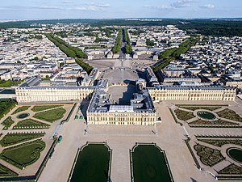
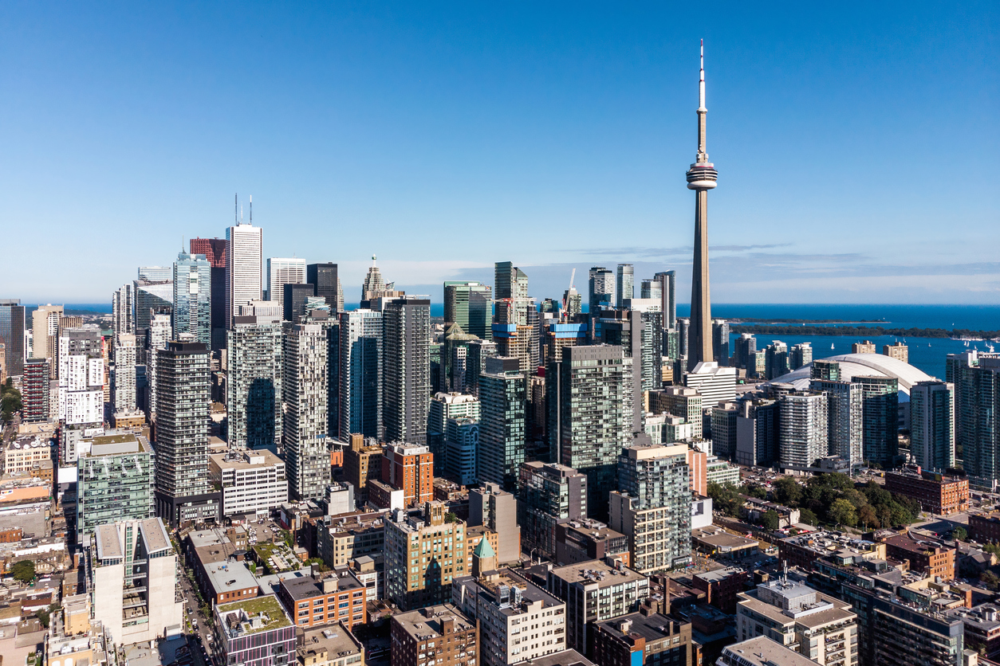

Hello, I'm Laure Caron
Bilingual second year student at IESEG School of Management, passionate about music and travelling. Always eager to learn new skills and implement them at my best.
IESEG School of ManagementStudent at IESEG School of Management
Being a second year student at IESEG School of Management, I am able to learn the skills necessary for my future. I work hard in order to gain real life work experiences. Currently interested in developing a career in finance.
Music
I have been fond of music for as long as I can remember. I had the opportunity to learn how to play guitar and piano which later on made me want to start writing some of my own music. During my studies, I try to keep up with music as much as I can whether it be playing or simply listening to music.
Travelling
I am also passionate about travelling since it enables me to discover new cultures which I find truly enriching and it helps me build my open-mindedness by meeting new individuals. Currently, I am the President of the International Club of IESEG Lille, which allows me to meet new people every single day and help them get acquainted with the city of Lille.
- 
-

- 